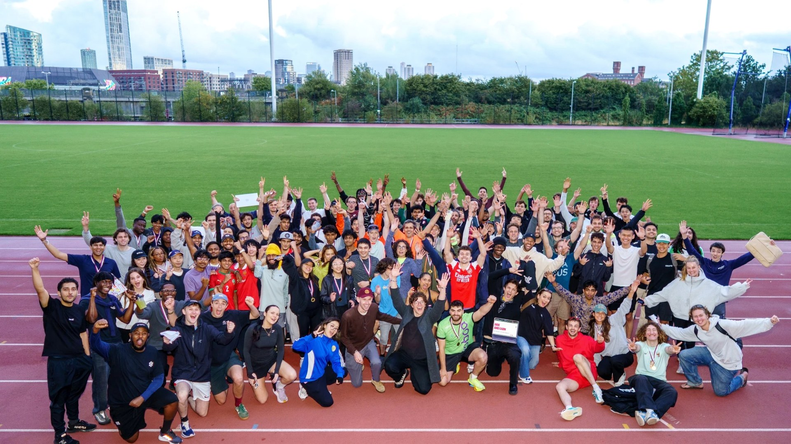
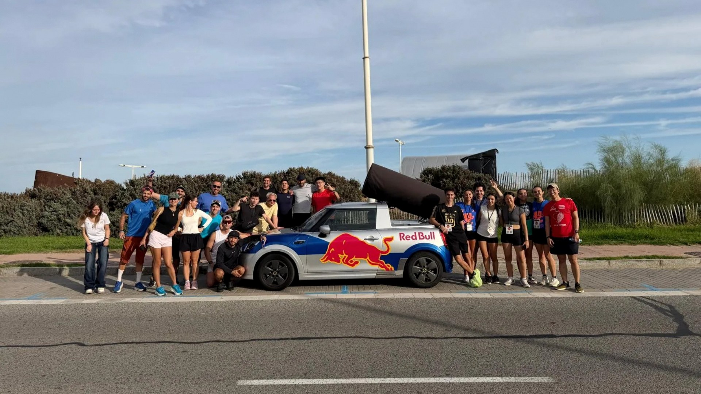

Only the runner can prompt.
Voice only. Teams of three talk to AI agents as they run. When nobody is running, the build stops.

It has happened twice.
London in August 2026, Barcelona in September. San Francisco is next.

London, 29 August 2026.
The London Marathon Community Track in the Olympic Park. Five and a half hours of running.

“That’s completely stupid. I need to do this.”
One of 285 sign-ups for London.

It rained, so we hired a sauna.
Booked two days before.

78 posts about one Saturday.
7,046 reactions, comments and reposts on LinkedIn.
Watch London in 90 seconds.
London
Barcelona
0 km.
What 32 teams ran between them that Saturday.
About as far as London to Barcelona.
So that is where we went next.

Barcelona, 24 September 2026.
We did it again, with the Claude Community House.

People running with their phones, which people do anyway.
An afternoon on the Mar Bella boardwalk, then demos indoors.
London
Barcelona
San Francisco
Two cities in four weeks.
The third is a long way west.
San Francisco, spring 2027.

Nobody has run this one yet.
See you outside, San Francisco.
Help us bring the next one to life.
runninghackathon@gmail.com